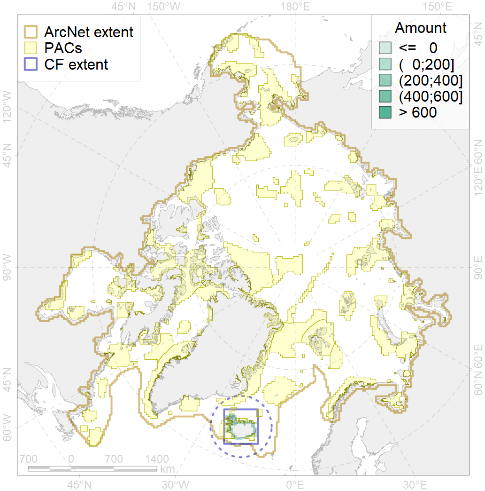
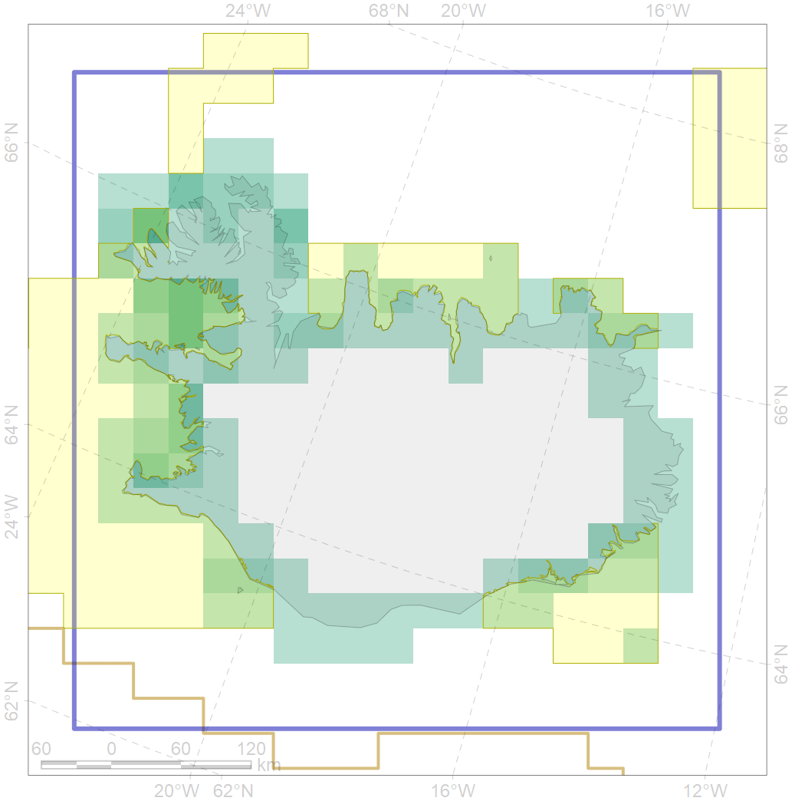

6054

| CF ID | 6054 |
| CF Name | Common eider (Somateria mollissima borealis) Iceland wintering grounds |
| Time Period | 2018 |
| Source(s) | http://seatrack.seapop.no/map/ |
| Seasonality | November-March |
| Depth Horizon | <50 m |
| Methodology | Field Data |
| Author Name | Gavrilo, Tertitski |
| Notes | |
| Conservation Target Set in the Scenario | 0.552 |
| Conservation Target Achieved in the Scenario | 0.583 (Scenario: 105.6%) |
| PAC ID | Proportion in the PAC | Contribution to ArcNet Target Achievement | PAC’s Contribution to the Achieved Target |
|---|---|---|---|
| 38 | 47.0% | 61.3% | 58.1% |
| 39 | 8.0% | 14.0% | 13.3% |
| 40 | 5.3% | 7.1% | 6.8% |
| 41 | 10.8% | 8.9% | 8.4% |
| inner | 71.1% | 91.4% | 86.5% |
| outer | 28.9% | 14.3% | 13.5% |